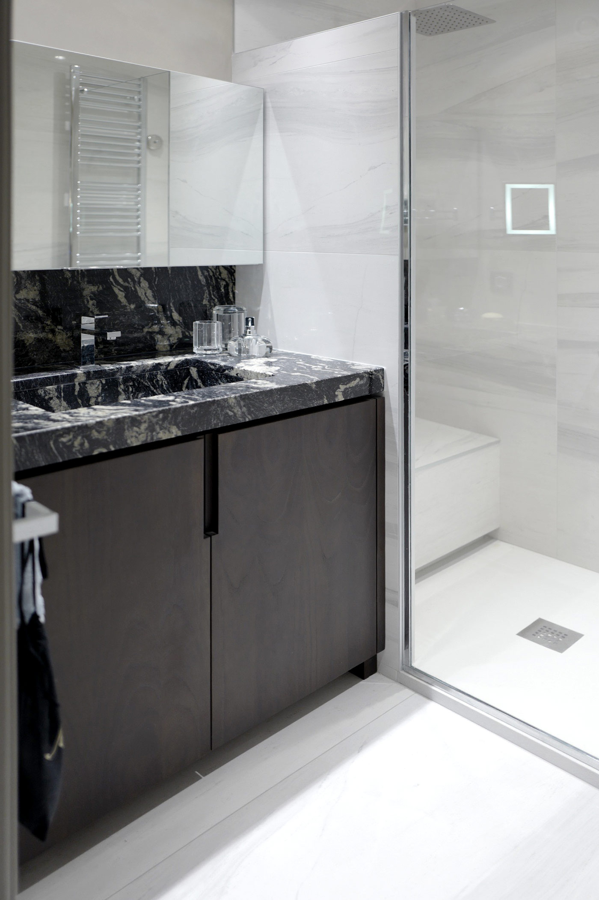
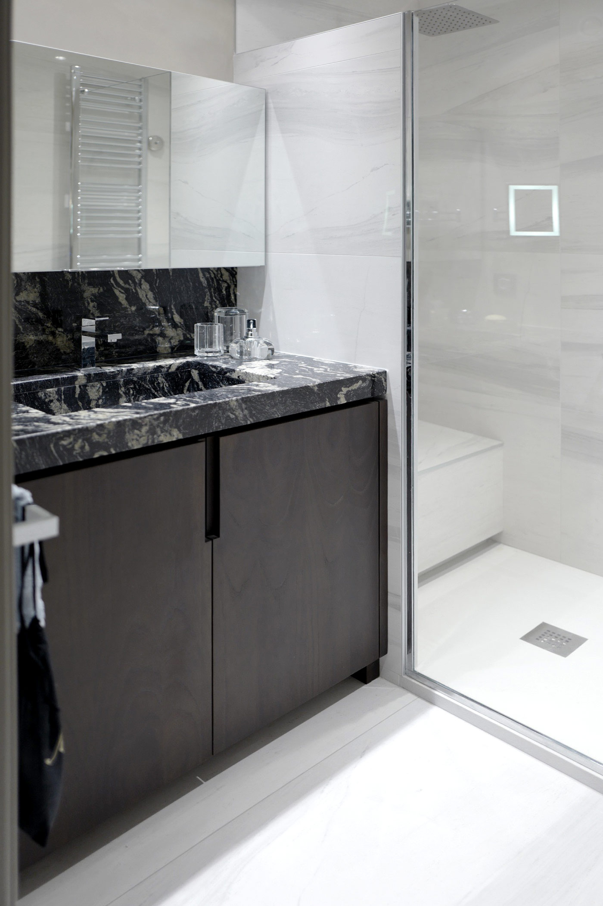

Le projet visait à transformer cet appartement destiné à la location, en résidence principale de
pour la propriétaire. L’appartement se trouve dans une résidence années 70, sans charme et surtout sans aucune
commodités.
Au niveau du technique, il a fallu revoir toutes les installations : l’electricité, la plomberie, le
chauffage, et la climatisation. Ce poste était inexistant mais était un souhait de la cliente. Nous
avons eu l’autorisation d’installer une unité extérieure sur les partie communes de la résidence.
Concernant l’agencement, nous avons traité cet appartement comme un meuble : toutes les
séparations entre les pièces sont en fait un agencement : cela nous permet surtout de créer des
solutions pour intégrer du rangement . La surface de l’appartement n’étant pas énorme, il fallait
utiliser tout l’espace à notre disposition.
Nous avons également crée une ambiance classique et intemporelle.
Le sol a été refléchi avec un calepinage en «Tapis» avec des grands formats imitations marbre
et des lames de bois assorties à l’agencement. Ce dernier, justement a été choisi en bois massif
dans un coloris très soutenu.
Le défi de ce projet : la distance.
Le chantier se trouvant à 500 km , il ne devait y avoir aucune erreur sur la conception de
l’agencement.
Le chantier a été réalisé en 5 semaines (mise en oeuvre) et a demandé 2 mois de dessins et de
gestion de commandes au préalable
 


Ouvert du Lundi au Samedi
10h-12h / 14h - 18h30
Saverio Bisciglia : 06 09 45 92 45
Roberto Bisciglia : 06 99 14 22 14
Deborah Bisciglia : 06 32 19 57 41